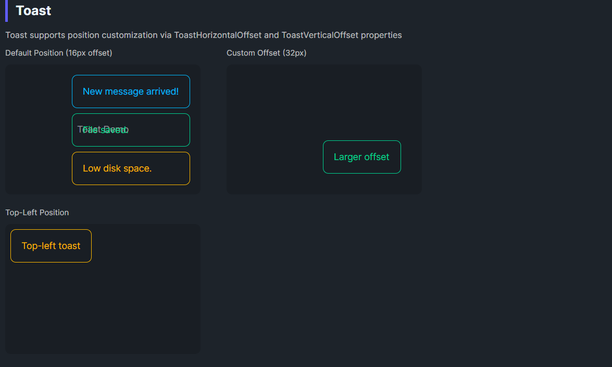

DaisyToast is a simple toast container (ItemsControl) that stacks toast items such as DaisyAlert. You control its screen position via alignment and offset properties. Place it in an overlay/top layer to float above other content; set ZIndex accordingly.
| Property | Description |
|---|---|
ToastHorizontalOffset |
Horizontal margin from the aligned edge (default 16). |
ToastVerticalOffset |
Vertical margin from the aligned edge (default 16). |
| Alignment | Use HorizontalAlignment/VerticalAlignment on the control to place it (e.g., BottomRight). |
<!-- Bottom-right toast stack -->
<Grid>
<!-- app content -->
<controls:DaisyToast HorizontalAlignment="Right"
VerticalAlignment="Bottom"
ToastHorizontalOffset="16"
ToastVerticalOffset="16">
<controls:DaisyAlert Variant="Info" Content="New message arrived." />
<controls:DaisyAlert Variant="Success" Content="Message sent successfully." />
</controls:DaisyToast>
</Grid>ZIndex so it sits above content.ItemsPanel (default StackPanel) spacing to control gap between toasts.Bottom/Top and Left/Right) plus offsets for desired corner placement.